Cosmic Civilizational Distance
20.03.23
The Kharkiv Institute of Radio Astronomy was founded in 1985, but research in this field of astronomy has been conducted in the city since the middle of the twentieth century. In the early 1960s, academician Semion Braude built the unique UTR radio telescope (Ukrainian T-shaped radio telescope) with high sensitivity and a narrow beam of vision at the training ground near Hrakove (Chuhuiv district of Kharkiv region), which made it possible to filter out earth noises and radio interference. In 1971, its improved version UTR-2 began scientific research. This is still the largest and most accurate tool in the world for analyzing decameter waves. It covers an area of 140 hectares and consists of 2,040 dipoles (iron cylindrical antennas eight meters long, installed at a height of 3.5 meters from the ground), which are interconnected by a system of tunnels and transmit a signal to the central building.

Space can be explored not only with the help of optical telescopes. Many bodies emit radio signals under certain conditions. If they are correctly recorded and interpreted, you can see much further than with the help of optics. UTR-2 became a global sensation in radio astronomy. Unique equipment immediately began to yield results, as it is the only ultra-sensitive radio telescope in the world operating in the range from 8 to 33 MHz. With the help of UTR-2, more than 4,000 cosmic radiation sources were recorded, and scientists significantly supplemented the Global Sky Map.
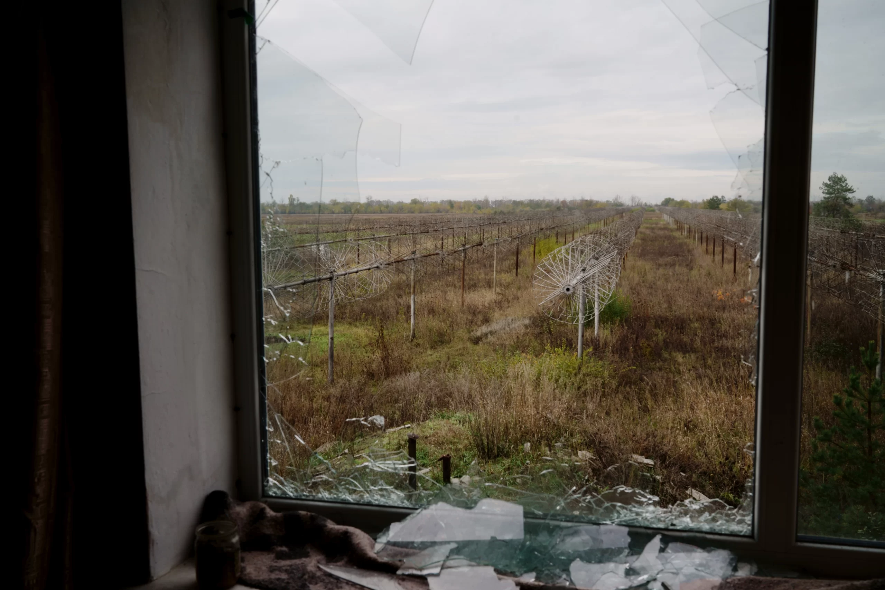
In addition to UTR-2, the institute also includes a large radio telescope RT70 in Yevpatoria, the Uran system (Ukrainian radio interferometers of the Academy of Sciences), which complements UTR-2 (antennas are located in Zmiiv in Kharkiv oblast, in Poltava, near Shatsk lakes, and in Odesa oblast), and a geocosmic research complex (radio signals in the near atmosphere) in the village of Martove behind the Pechenihy reservoir on the Siverskyi Donets River in Kharkiv oblast. In 2001, a project was launched to create a Giant Ukrainian Radio Telescope with 20,000 antennas. In Kharkiv itself, the main building of the Institute is located in the center, and there is also a complex of laboratories and a production workshop near the Usykov Institute.
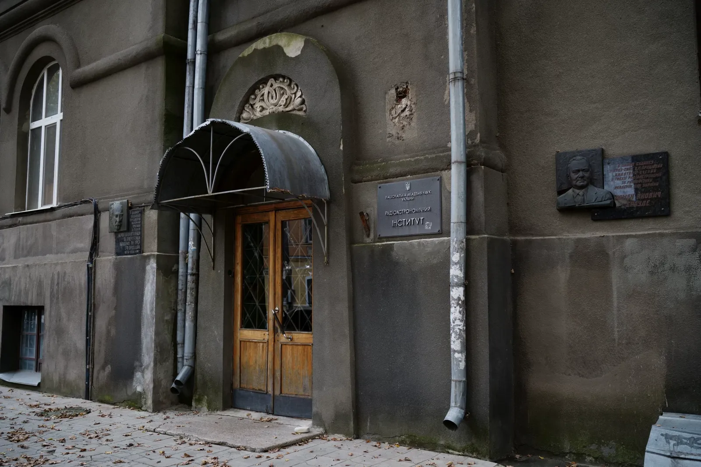
The institute suffered from the Russian-Ukrainian war back in 2014, when the Russians seized Crimea along with the RT70 telescope. The peculiarity of this telescope is that from time to time, it needs to be rotated so that the bearings do not deform under the weight. The occupiers did not do this, and it broke down. During the full-scale invasion, the geospace research complex and UTR-2 were under occupation for more than six months, some of the structures in Kharkiv suffered from the shelling.
We talked with the director of the institute, Viacheslav Zakharenko, in the main building of the institute, where they plan to transfer some of the equipment from the affected buildings for the winter.
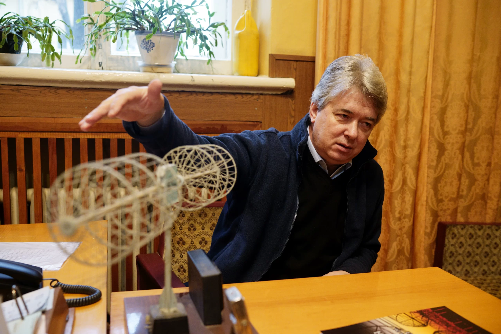
Mr. Zakharenko spoke about the unique discoveries made by Kharkiv radio astronomers. In 1982, they recorded carbon atoms stretching to more than 0.1 mm in the clouds of rarefied interstellar gas. In such areas, the stars are then condensed, resulting in the emergence of galaxies. In 2007 and 2010, scientists were able to capture lightning in the atmosphere of Saturn using UTR-2; other telescopes don’t have the required sensitivity to see it.
Another vector is the search for planets with life. Here, scientists work from the opposite: they outline areas where life is definitely absent. The explosion of a supernova sweeps away all forms of life within a radius of 10 parsecs. Our planet has existed for 4.6 billion years, so supernovae did not explode within a radius of 10 parsecs (is a unit of distance measurement in astronomy. The name comes from the words “parallax” (visible displacement of an object) and “second.” One parsec equals 3.26 light-years (30.83^12 km) from us for all this time. From the remnants of the star, a pulsar (is a neutron star that rotates and has a powerful magnetic field, and is therefore a cosmic source of pulsating electromagnetic radiation from the magnetic poles) is often formed, which has a narrow beam, like a lighthouse. UTR-2 sees pulsars close to us well. Scientists have discovered 400 remnants of supernova explosions within a radius of 1,500 parsecs and thus outlined the dead zones of space.
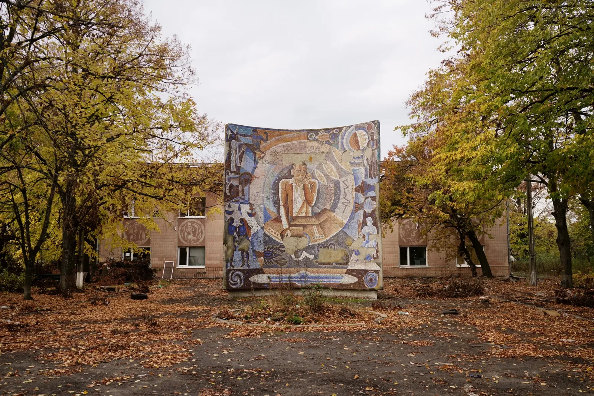
One of the most important applied areas of research is the prediction of solar activity, emissions of substances* from the solar corona, which damage expensive space equipment and affect the Earth (more about this can be found here — ed.). Now, the probability of forecasts is 35–40%. To get to 90%, you need to track emissions from the Sun to the Earth, which can change direction by 30 degrees. Plans include a solar activity tracking project in Ukraine, Canada, and Japan.
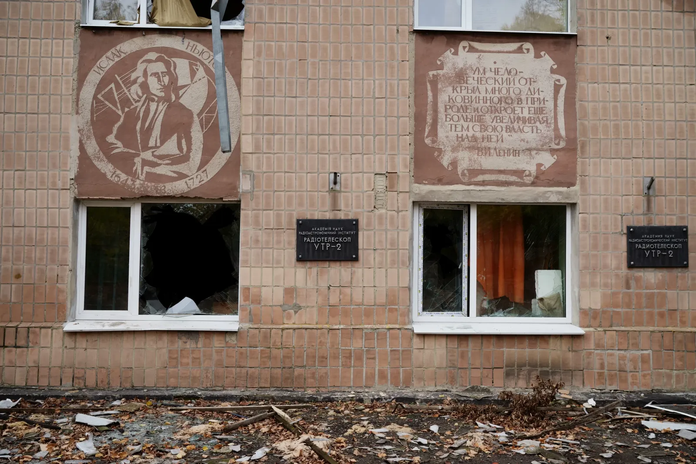
The Institute works with many scientific organizations of the world. With NenuFAR alone (a new low-frequency radio telescope in France, whose creation Kharkiv scientists joined), 10 key international projects are being implemented, including studies of the Sun, Jupiter, and pulsars. For example, radio astronomers observe Jupiter and the Sun in parallel with American satellites flying around the planet and the star.
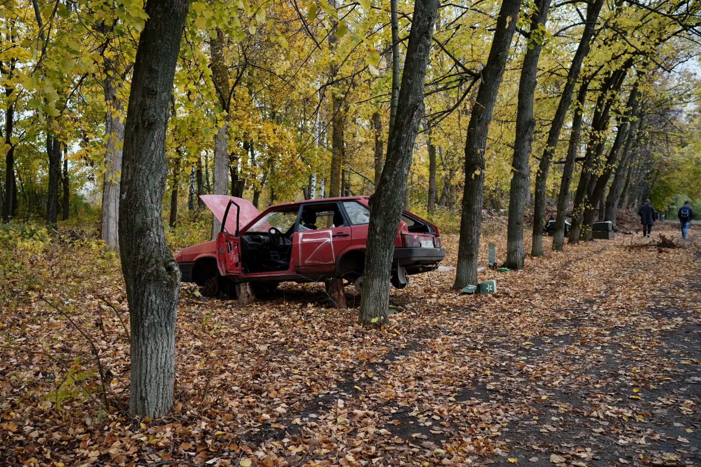
Since 2014, Mr. Zakharenko was worried about the UTR-2 radio telescope because it is located on the Izium highway, which for 8 years had been the main way that led to the combat area.
At 4:40 a.m. on February 24, the director of the institute woke up from explosions, read on the Internet that a large-scale invasion had begun, and called his colleagues who were advised to work remotely and to evacuate in case of danger.
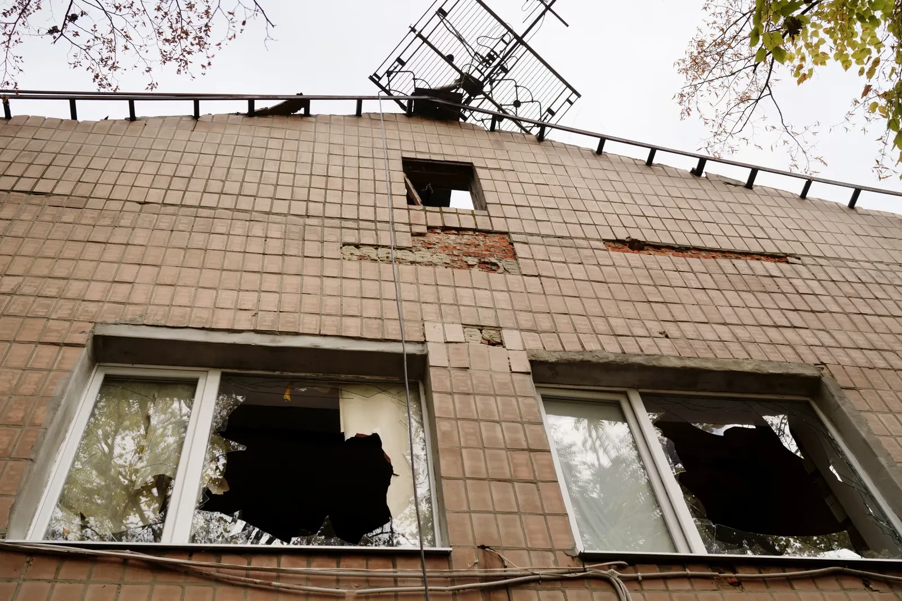
Several scientists from the institute work in shifts at UTR-2, and 26 local employees service a huge territory and equipment. On February 24, academician Oleksandr Konovalenko was at UTR-2. He thought that the war would not touch the radio telescope, but in three days, he found himself in occupation. Three months later, he managed to leave for Europe through Russia.
Initially, the Russians allowed employees to work on the radio telescope, but a month later, they kicked everyone out and set up a barracks there with combat positions from which they conducted active shelling.
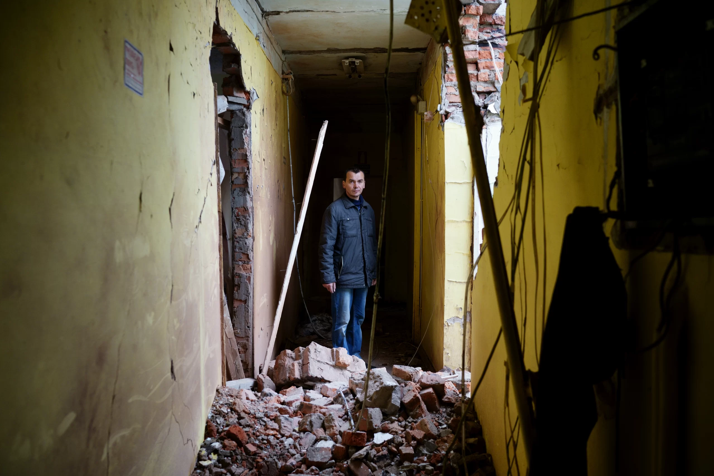
Observatory engineer Anatolii Miasoyed finished his shift at UTR-2 on February 23, so he wasn't at work when the Russians came. He spent the entire occupation in Volokhovyi Yar, five kilometers from the telescope. They took his car and money, so it was impossible to get to the Ukrainian government-controlled territory, but he became the first UTR-2 employee, who, despite the landmines, went there after its liberation.
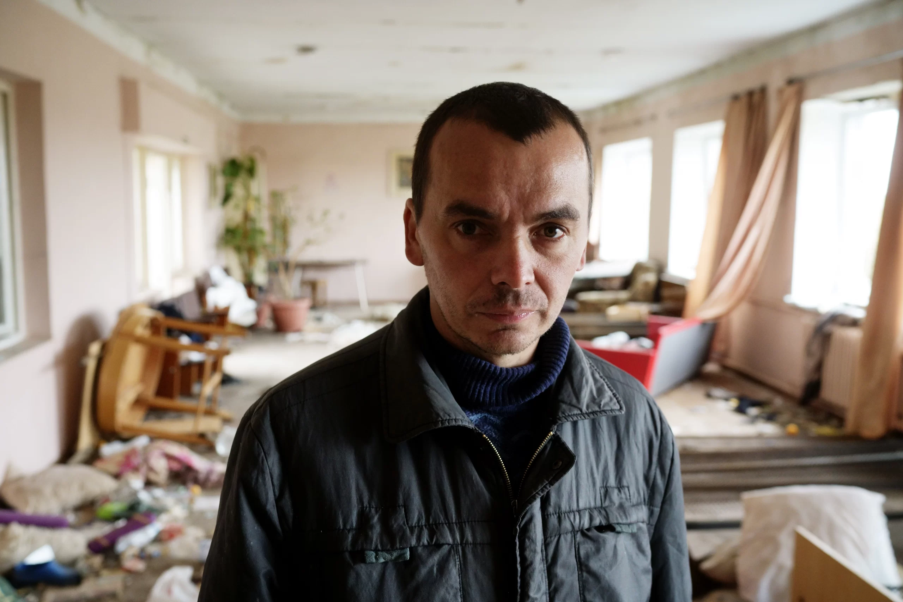
As a result of hostilities in the central building of the radio telescope, the roof was demolished, windows were smashed, the radio telescope control panel was destroyed, but the dipoles and underground tunnels thankfully remained intact. The Russians stole powerful computers that made calculations, and the premises were desecrated in their best traditions.
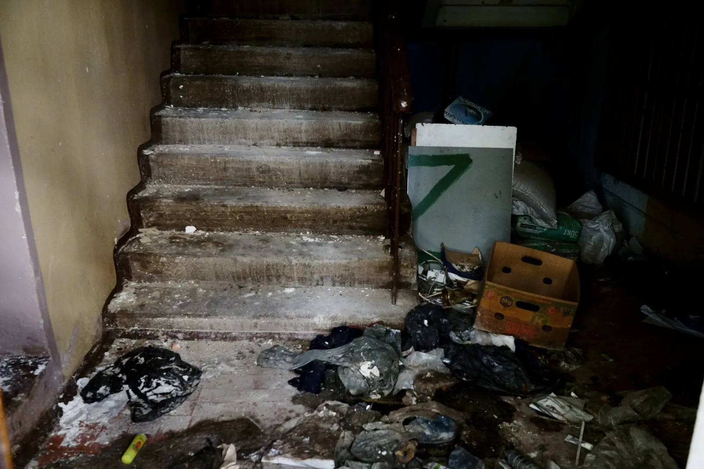
Above the stairs hangs a large picture of an astronaut, with a bunch of garbage and rags under it. In one of the rooms, the occupiers left three-liter glass jars of canned Russian cabbage soup.
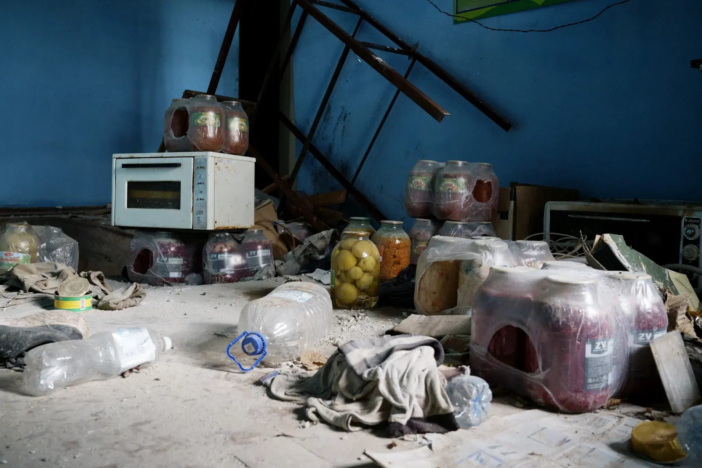
The very idea of conserving soups for the army in large mason jars is really absurd, and if we add unsanitary life and violence to this, you get a fairly holistic image of the Russian invader. It’s the farthest possible thing from scientific space exploration. But in February-September 2022, on the territory of UTR-2, these two worlds crossed.
A month has passed since the deoccupation of this part of the Kharkiv region. There is still no electricity in 400 towns and villages, and sappers work non-stop, but they have not yet had time for the scientific object with such a large area. And without defusing mines, it is impossible to either install a temporary roof or change the windows.
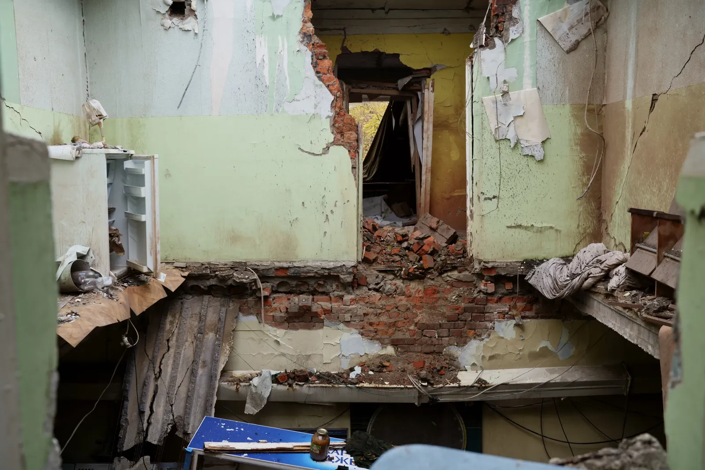
Of the 145 researchers of the Institute of Radio Astronomy, 30 moved abroad, most of them gladly accepted by colleagues in European institutions. The international scientific community can also help with the restoration of UTR-2, but this can only happen when the war finally ends.
Despite the military difficulties, the institute continues almost all its scientific projects. The UTR-2 radio telescope is not working now, but it unintentionally recorded a phenomenon that we, unfortunately, already know well — the cosmic civilizational distance that separates us from the so-called Russian world.
This report has been developed within the project supported by the Public Affairs Section of the U.S. Embassy in Ukraine. The views of the authors do not necessarily reflect the official position of the U.S. government.